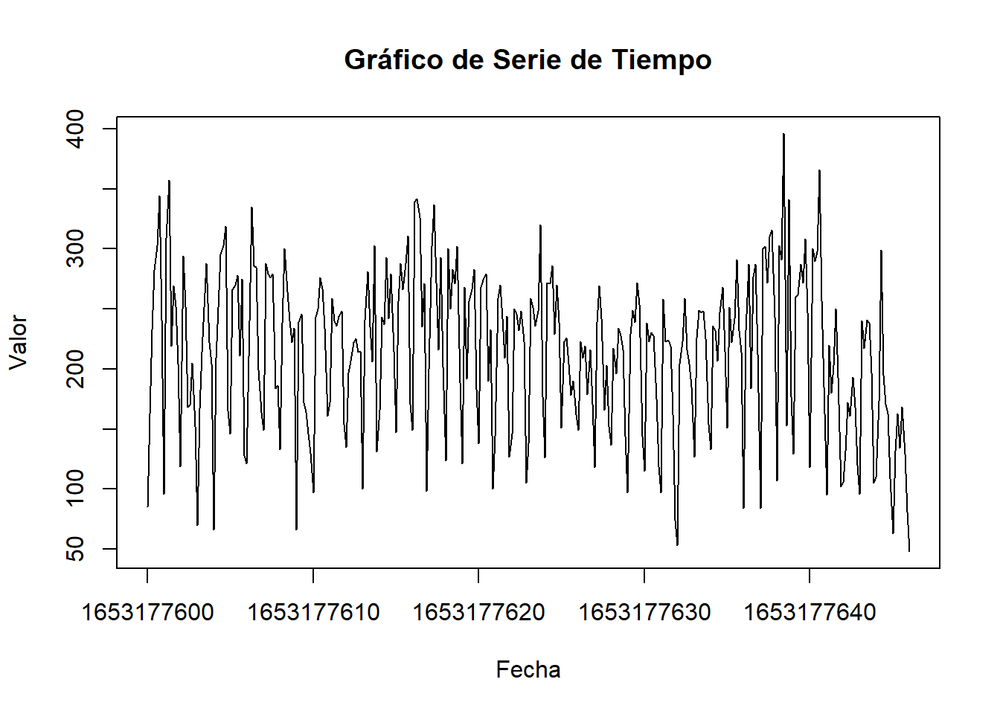
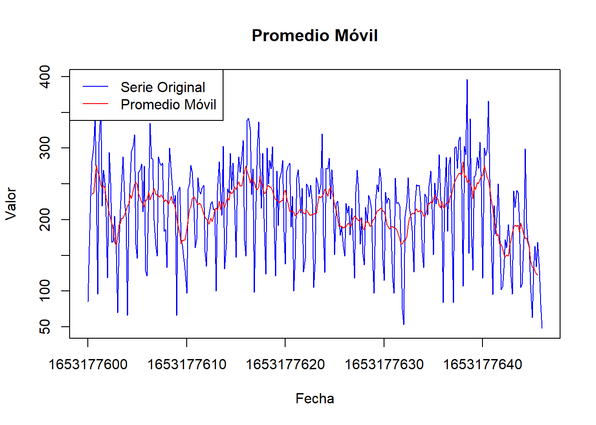
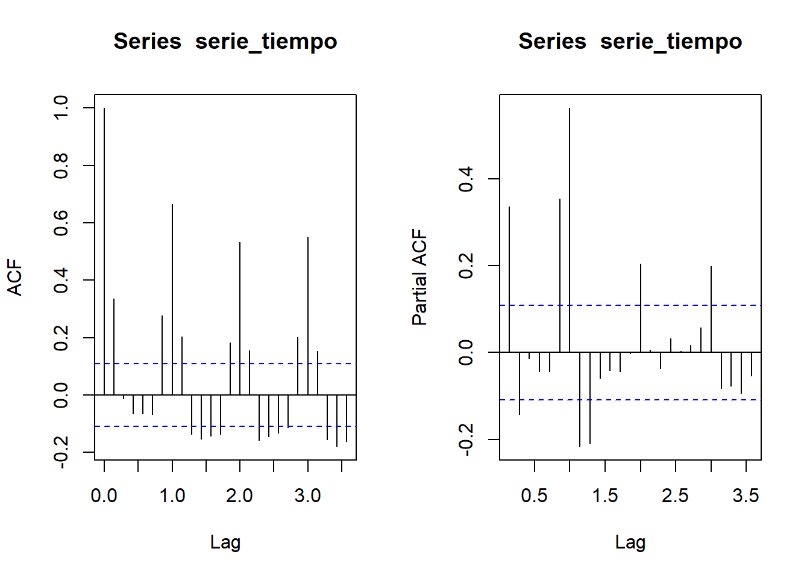
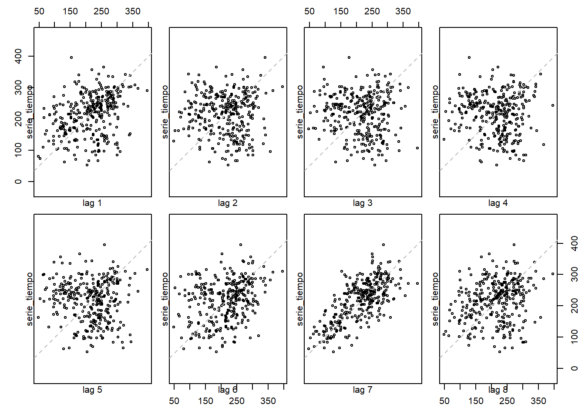

Capítulo 2 Librerias e importe de datos
En este apartado se detallara el importe de los datos utilizados al igual que las librerias requeridas para el desarrollo de este libro.
2.1 Importe de los datos
## The following package(s) will be installed:
##
## - readxl [1.4.3]
##
## These packages will be installed into "C:/Users/JSOLISP/OneDrive - TCC/Escritorio/PERSN/Universidad/Series_de_tiempo/PROYECTO_BOOKDOWN/renv/library/R-4.3/x86_64-w64-mingw32".
##
## # Installing packages --------------------------------------------------------
##
## - Installing readxl ... OK [linked from cache in 0.0018s]
##
## Successfully installed 1 package in 16 milliseconds.## Registered S3 method overwritten by 'quantmod':
## method from
## as.zoo.data.frame zooruta_archivo <- "datos.xlsx"
nombre_hoja <- "datos"
datos <- read_excel(ruta_archivo, sheet = 'datos')
ventana <- 7 # Tamaño de la ventana para el promedio móvil
promedio_movil <- ma(serie_tiempo, order = ventana)plot(serie_tiempo, main = "Promedio Móvil", xlab = "Fecha", ylab = "Valor", col = "blue")
lines(promedio_movil, col = "red")
legend("topleft", legend = c("Serie Original", "Promedio Móvil"), col = c("blue", "red"), lty = 1)
## The following package(s) will be installed:
##
## - zoo [1.8-12]
##
## These packages will be installed into "C:/Users/JSOLISP/OneDrive - TCC/Escritorio/PERSN/Universidad/Series_de_tiempo/PROYECTO_BOOKDOWN/renv/library/R-4.3/x86_64-w64-mingw32".
##
## # Installing packages --------------------------------------------------------
##
## - Installing zoo ... OK [linked from cache in 0.0014s]
##
## Successfully installed 1 package in 15 milliseconds.##
## Attaching package: 'zoo'## The following objects are masked from 'package:base':
##
## as.Date, as.Date.numeric## The following package(s) will be installed:
##
## - ggplot2 [3.4.2]
##
## These packages will be installed into "C:/Users/JSOLISP/OneDrive - TCC/Escritorio/PERSN/Universidad/Series_de_tiempo/PROYECTO_BOOKDOWN/renv/library/R-4.3/x86_64-w64-mingw32".
##
## # Installing packages --------------------------------------------------------
##
## - Installing ggplot2 ... OK [linked from cache in 0.0015s]
##
## Successfully installed 1 package in 15 milliseconds.library(ggplot2)
library(zoo)
ventana <- 7 # Tamaño de la ventana para el promedio móvil
promedio_movil <- rollmean(serie_zoo, k = ventana, align = "center", fill = NA)
ggplot(data = as.data.frame(serie_zoo)) +
geom_line(aes(x = index(serie_zoo), y = serie_zoo), color = "blue", size = 1) +
geom_line(data = as.data.frame(promedio_movil), aes(x = index(promedio_movil), y = promedio_movil), color = "red", size = 1) +
labs(title = "Promedio Móvil", x = "Fecha", y = "Valor") +
theme_minimal()## Warning: Using `size` aesthetic for lines was deprecated in ggplot2 3.4.0.
## ℹ Please use `linewidth` instead.
## This warning is displayed once every 8 hours.
## Call `lifecycle::last_lifecycle_warnings()` to see where this warning was
## generated.## Warning: Removed 6 rows containing missing values (`geom_line()`).
library(ggplot2)
library(zoo)
# Supongamos que tienes una serie de tiempo llamada 'serie_zoo' de tipo zoo
# Crea la serie con el rezago de -7
lag_7 <- lag(serie_zoo, k = -7)
# Alinea las dos series para tener la misma longitud
serie_zoo_alineada <- window(serie_zoo, start = start(lag_7))
lag_7_alineado <- window(lag_7, start = start(lag_7))
# Crea un dataframe para ggplot2
df <- data.frame(
Fecha = index(serie_zoo_alineada),
Original = coredata(serie_zoo_alineada),
Aproximacion = coredata(lag_7_alineado)
)
# Crea el gráfico utilizando ggplot2
ggplot(df, aes(x = Fecha)) +
geom_line(aes(y = Original, color = "Original"), size = 1) +
geom_line(aes(y = Aproximacion, color = "Aproximación en Lag -7"), size = 1, linetype = "dashed") +
theme_minimal()